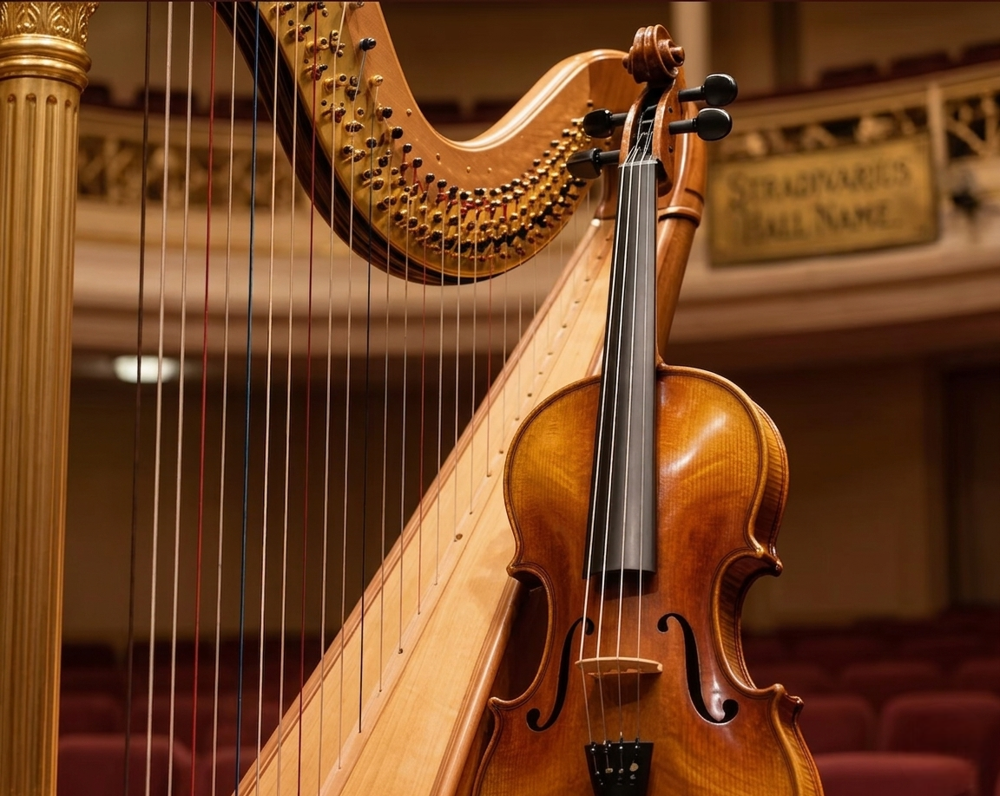

Spojenie huslí a harfy prináša jemnú a elegantnú hudobnú atmosféru, ktorá sa dokonale prispôsobí akémukoľvek typu svadobného obradu. Či už ide o intímnu záhradnú ceremóniu alebo väčší svadobný obrad, toto hudobné spojenie vytvára výnimočný a romantický zážitok s prirodzenou noblesou a harmóniou.
Rezervuj Duo

Sláčikové kvarteto Memories Quartet prináša bohatý, plný a harmonický zvuk, ktorý vytvára výnimočne elegantnú a luxusnú hudobnú atmosféru. Vďaka spojeniu štyroch nástrojov dokážeme dotvoriť aj tie najväčšie svadobné obrady či eventy s noblesou a silným hudobným zážitkom.
ODOSLAŤ DOPYTHusle a tanec je moderná a dynamická hudobná kombinácia, ktorá prináša energiu, emóciu a jedinečný zážitok do každej udalosti. Vďaka flexibilnému štýlu vieme interpretovať široké spektrum žánrov – od klasiky až po moderné hity – a prispôsobiť hudbu presne atmosfére vášho svadobného dňa či eventu.
Dopyt na vystúpenie na mieru